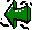

The Subscriptions Dialogue |
 |
You can access the preferences dialog from the Servers: Subscriptions menu item.
The Subscriptions dialogue controls which Newsgroups you are subscribed to on your News Servers.
Before you display this dialogue, you should add a new server. See the Servers: Add Server menu item for more information.
This contains a list of all News Servers you are using. When you click on any server, a connection is established with the server and the list of new newsgroups is downloaded.
If this is the first time you have connected to the News Server, all Newsgroups on the server are downloaded, and listed as new groups. In future, only the list of new Newsgroups since you last checked are downloaded.
This user interface item is currently disabled due to performance problems with servers offering many thousands of Newsgroups.
The list of all, subscribed or new newsgroups on the currently selected server, depending on which of the radiobuttons is selected.
You can select multiple items in this list by using your system specific multiple item selecting action (e.g. on Windows or UNIX, Ctrl-Left click, on the Mac, Shift-Click each item).
Subscribes you to or unsubscribes you from the currently selected newsgroup or groups.
Forces NewsAgent to reconnect to the server and download the list of New Newsgroups since the last time it checked.
Determines which list of Newsgroups to display in the Newsgroups list.
Save or abort.
Next Page: Preferences Dialogue General Panel